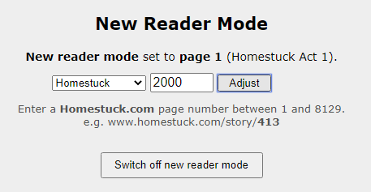

That's an extremely good question. The issue with this is that it's so damn large I can't even remember everything inside off the top of my head. Here's a by-no-means exhaustive list:
Due to compatibility issues with Flash, and the browser engine the collection runs on, the only platforms we can support are Windows/Mac/Linux. These problems may be solved in the distant future, but right now our hands are tied.
When you start up the program for the first time, "new reader mode" is enabled and set by default - this is a toggle that will hide certain spoilery content until it's safe. This does also prevent you from skipping ahead - but you can manually set your progress through the story on the settings page.
Enter your current page number and hit "Adjust" - this should catch everything up to where you currently are.
The collection is composed of two parts: the main app, and the Asset Pack. The main app handles the code and logic and processing, and the asset pack stores the data. For a couple of different reasons (namely, the Asset Pack is very large and also not GPL licensed) we distribute the Asset Pack and the collection separately.
The good news is the collection can be updated with bugfixes and features without requiring a new Asset Pack! We use semantic versioning, so if you were on 1.0.0, an update to 1.0.X would be a bugfix, and an update to 1.X.X would mean bugfixes and new features. Only an update to X.X.X would require re-downloading a new asset pack/patch.